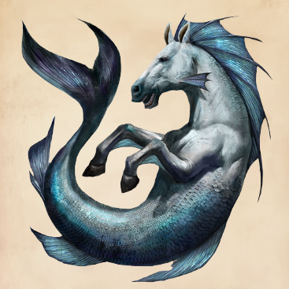
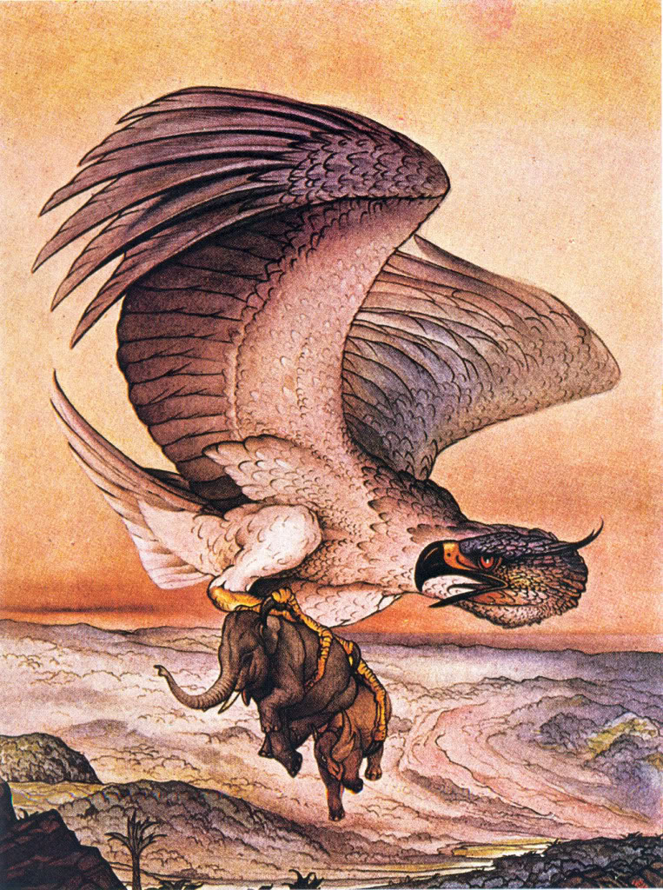

| Number |
Animal Name |
Image |
Description |
| 1 |
Vegetable Lamb of Tartary |
|
It is a legendary zoophyte (an animal with plant like attribute) of Central Asia, once believed to grow sheep as its fruit. It was believed the sheep were connected to the plant by an umbilical cord and grazed the land around the plant. When all accessible foliage was gone, both the plant and sheep died. |
| 2 |
Loveland Frog |
|
Legendary humanoid frog described as standing roughly 4 feet tall, allegedly spotted in Loveland, Ohio. In 1972, the Loveland frog legend gained renewed attention when a Loveland police officer reported to a colleague that he had seen an animal consistent with descriptions of the frogman. |
| 3 |
Cactus Cat |
 |
A Lion like creature, covered in hair like thorns, with particularly long spines extending from the legs and its armored, branching tail. The creature was said to use its spines to slash cacti at night, allowing juice to run from the plants. On later nights, the creature was said to return to drink the now fermented juice. |
| 4 |
Shachihoko |
 |
It is an animal in Japanese folklore with the head of a tiger and the body of a carp. It was believed that this animal could cause the rain to fall, and as such, temples and castles were often adorned with roof ornaments (shibi) crafted in the form of a shachihoko, in order to protect them from fire. Those buildings were often made of wood, rendering them flammable. |
| 5 |
Rat King |
|
It is a collection of rats whose tails are intertwined and bound together by one of several possible mechanisms, such as entangling material like hair or sticky substances like sap or gum or getting tied together. Historically, this alleged phenomenon is particularly associated with Germany. There are several specimens preserved in museums but very few instances of rat kings have been observed in modern times. A similar phenomenon with squirrels has been observed, which has had modern documented examples. In folklore, rat kings are associated with various superstitions and were often seen as a bad omen, particularly associated with plagues. |
| 6 |
Tikbalang |
 |
It is a creature of Philippine folklore said to lurk in the mountains and forests of the Philippines. It is a tall, bony humanoid creature with the head and hooves of a horse and disproportionately long limbs, to the point that its knees reach above its head when it squats down. In some versions, it is a transformation of an aborted fetus sent to earth from limbo. |
| 7 |
Ziz |
|
As Leviathan is the king of fishes, so the Ziz is appointed to rule over the birds. His name comes from the variety of tastes his flesh has. The Ziz is as monstrous of size as Leviathan himself. His ankles rest on the earth, and his head reaches to the very sky. |
| 8 |
Uchchaihshravas |
|
It is a seven headed flying horse, created during the churning of the milk ocean. It is considered the best of horses, prototype and king of horses. Uchchaihshravas is often described as a vahana ("vehicle") of Indra (the king of gods), but is also recorded to be the horse of Bali, the king of Asuras (demons). Uchchaihshravas is said to be snow white in color. |
| 9 |
Hippocampus |
 |
It is a mythological creature shared by Phoenician, Etruscan, Pictish, Roman and Greek mythology, though its name has a Greek origin. The hippocampus has typically been depicted as having the upper body of a horse with the lower body of a fish. |
| 10 |
Roc |
 |
The roc is an enormous legendary bird of prey in the popular mythology of the Middle East. |